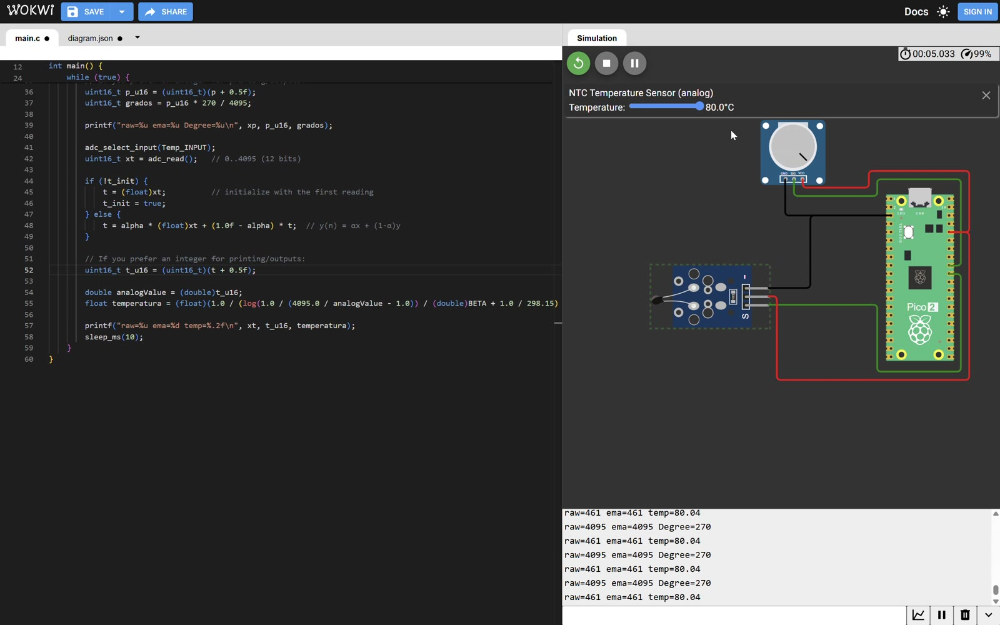
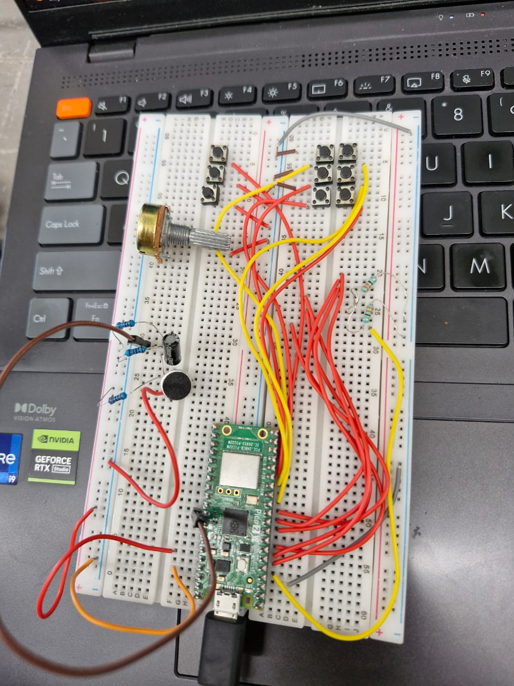
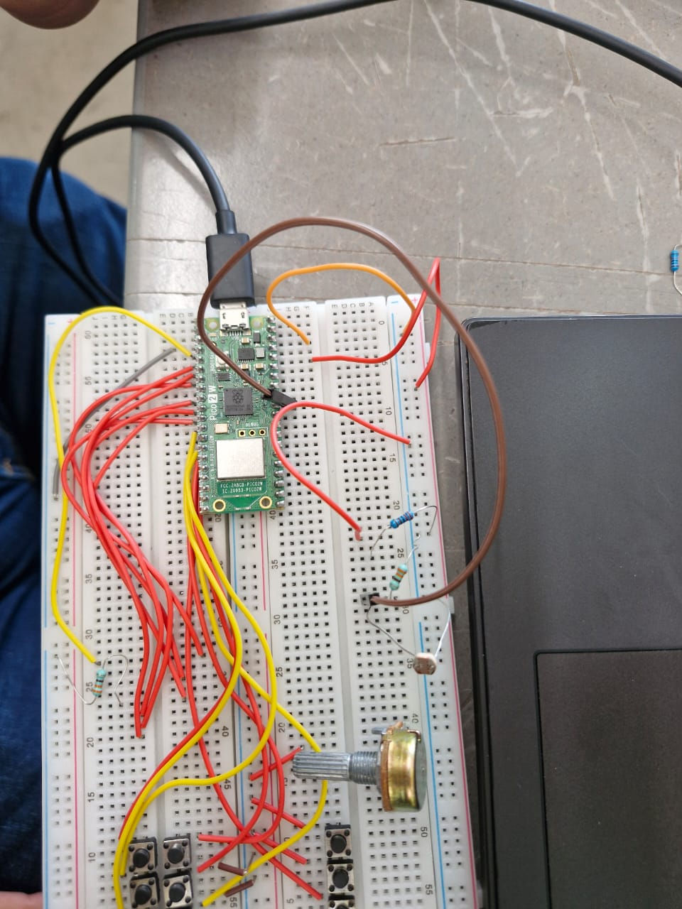

Analog Sensors with ADC and UART (RP2350)
Objective
Read four analog sensors with the RP2350's ADC and convert the readings into temperature, angle, sound level and light level. In some activities the value is also sent through UART0.
Materials
- Raspberry Pi Pico 2 W
- LM35 temperature sensor
- Potentiometer
- Analog microphone module
- LDR + fixed resistor
- USB-to-TTL adapter (to read the UART)
- Protoboard, jumper wires, micro-USB cable
ADC basics
- 12 bits →
adc_read()returns 0 to 4095 (0 V to 3.3 V). - To get volts:
V = lectura × 3.3 / 4095 - ADC pins: GPIO26 (ADC0), GPIO27 (ADC1), GPIO28 (ADC2).
adc_gpio_init()prepares the pin andadc_select_input()chooses the channel (only one is converted at a time).
Activity 1 — Temperature (LM35)
Circuit Diagram
LM35 Vs → VBUS (5 V)
LM35 Vout → GPIO26 (ADC0)
LM35 GND → GND
GPIO0 (UART0 TX) → RX of the USB-TTL adapter
GPIO1 (UART0 RX) → TX of the USB-TTL adapter
GND → GND of the USB-TTL adapter
Source Code
#include <stdio.h>
#include "pico/stdlib.h"
#include "hardware/uart.h"
#include "hardware/adc.h"
int main() {
stdio_init_all();
uart_init(uart0, 115200);
gpio_set_function(0, GPIO_FUNC_UART);
gpio_set_function(1, GPIO_FUNC_UART);
uart_set_format(uart0, 8, 1, UART_PARITY_NONE);
adc_init();
adc_gpio_init(26);
adc_select_input(0);
char texto[40];
while (true) {
uint16_t lectura = adc_read();
float voltaje = lectura * 3.3 / 4095;
float temp = voltaje / 0.01f;
printf("Temperatura: %.1f C\n", temp);
sprintf(texto, "Temperatura: %.1f C\r\n", temp);
uart_puts(uart0, texto);
sleep_ms(500);
}
}
How it works
- The LM35 gives 10 mV per °C, so
temp = voltaje / 0.01(0.25 V = 25 °C). - UART0 at 115200 baud, 8N1, on GPIO0/GPIO1.
uart_puts()only sends text, so I format the value withsprintf()first.printf()goes to USB anduart_puts()goes to the UART. They're two separate outputs.
Results
The temperature shows up on both terminals every 500 ms. When I hold the sensor between my fingers it goes up a few degrees and then slowly comes back down.
Video
Activity 2 — Angle with a potentiometer
Circuit Diagram
Potentiometer end 1 → 3V3
Potentiometer wiper → GPIO27 (ADC1)
Potentiometer end 2 → GND
GPIO0 (UART0 TX) → RX of the USB-TTL adapter
GPIO1 (UART0 RX) → TX of the USB-TTL adapter
GND → GND of the USB-TTL adapter

potentiometer diagram
Source Code
#include <stdio.h>
#include "pico/stdlib.h"
#include "hardware/uart.h"
#include "hardware/adc.h"
int main() {
stdio_init_all();
uart_init(uart0, 115200);
gpio_set_function(0, GPIO_FUNC_UART);
gpio_set_function(1, GPIO_FUNC_UART);
uart_set_format(uart0, 8, 1, UART_PARITY_NONE);
adc_init();
adc_gpio_init(27);
adc_select_input(1);
char texto[40];
while (true) {
uint16_t lectura = adc_read();
float angulo = lectura * 258.26 / 4095.0;
printf("Angulo: %.1f grados\n", angulo);
sprintf(texto, "Angulo: %.1f grados\r\n", angulo);
printf("Voltaje: %.1f V\r\n", lectura * 3.3 / 4095.0);
uart_puts(uart0, texto);
sleep_ms(200);
}
}
How it works
- The potentiometer is a voltage divider: the wiper goes from 0 V to 3.3 V (0 to 4095).
- I map the reading to its mechanical range of 258.26°:
angulo = lectura × 258.26 / 4095 - It's on GPIO27, so the channel is
adc_select_input(1). - I also print the voltage over USB to check that it matches the angle.
Results
From one end to the other the angle goes from 0° to ~258° and the voltage from 0 V to 3.3 V.
Activity 3 — Sound level with a microphone
Circuit Diagram

microphone diagram
Source Code
#include <stdio.h>
#include <stdlib.h> // Para la función abs()
#include "pico/stdlib.h"
#include "hardware/adc.h"
#define ADC_INPUT 0 // canal 0 -> GPIO26
const float alpha = 0.05f; // Factor de suavizado para la envolvente
int main() {
stdio_init_all();
adc_init();
adc_gpio_init(26); // GPIO26 = ADC0
adc_select_input(ADC_INPUT);
bool y_init = false;
float y = 0.0f;
// Asumiendo que el circuito centra la señal en 1.65V (mitad de 3.3V)
// 1.65V corresponde a un valor ADC aproximado de 2048 (en 12 bits)
const int ADC_CENTER = 2048;
while (true) {
uint16_t x = adc_read(); // 0..4095 (12 bits)
// 1. Quitar el nivel DC para tener la onda de audio centrada en 0
int32_t audio_wave = (int32_t)x - ADC_CENTER;
// 2. Rectificar (valor absoluto) para obtener la amplitud de la onda
uint32_t amplitude = abs(audio_wave);
// 3. Aplicar EMA a la amplitud para obtener la "envolvente" (volumen general)
if (!y_init) {
y = (float)amplitude;
y_init = true;
} else {
y = alpha * (float)amplitude + (1.0f - alpha) * y;
}
uint16_t volume = (uint16_t)(y + 0.5f);
// Imprime la onda pura y el volumen para verlos en el Serial Plotter
printf("raw_wave=%d volume_envelope=%u\n", audio_wave, volume);
// Muestreo más rápido. 125us te da ~8kHz de sample rate, ideal para audio.
// sleep_ms(10) era muy lento (100 Hz), perderías toda la información de la voz.
sleep_ms(100);
}
}
How it works
The microphone signal is centered at ~1.65 V (≈2048 counts) because the ADC can't read negative voltages. Each sample goes through 3 steps:
- Remove DC:
x − 2048centers the wave on 0. - Rectify:
abs()makes the negative part positive (like a full-wave rectifier). - EMA filter:
y = α·x + (1 − α)·ywith α = 0.05 smooths the amplitude and gives the envelope (the general volume).
At 100 ms per sample (10 Hz) I can't capture the actual waveform (voice needs several kHz), but louder sounds still give bigger values, so the envelope works as a volume meter.
Results
In silence the envelope stays low. When I talk or clap, raw_wave jumps a lot and the envelope goes up slowly, then goes back down when the sound stops.
Video
Activity 4 — Light sensor (LDR)
Circuit Diagram

light sensor diagram
Source Code
#include <stdio.h>
#include "pico/stdlib.h"
#include "hardware/adc.h"
#define LDR_ADC_INPUT 0 // Canal 0 -> GPIO26
#define LDR_GPIO_PIN 26 // Pin donde se conecta el divisor de voltaje del LDR
const float alpha = 0.0625f; // Filtro EMA (0.0625 = 1/16) para estabilizar la lectura
const uint16_t LDR_MIN = 9; // lectura tapando el LDR (oscuridad)
const uint16_t LDR_MAX = 3600; // lectura con luz directa (lampara del cel)
int main() {
stdio_init_all();
adc_init();
adc_gpio_init(LDR_GPIO_PIN);
adc_select_input(LDR_ADC_INPUT);
bool y_init = false;
float y = 0.0f;
printf("Iniciando lectura de Fotorresistencia (LDR)...\n");
while (true) {
uint16_t x = adc_read(); // Lectura cruda (0..4095)
if (!y_init) {
y = (float)x;
y_init = true;
} else {
y = alpha * (float)x + (1.0f - alpha) * y;
}
uint16_t filtro = (uint16_t)(y + 0.5f);
float voltaje = filtro * 3.3f / 4095.0f;
// pasar a porcentaje con el rango que medimos (LDR_MIN..LDR_MAX)
int nivel;
if (filtro <= LDR_MIN) nivel = 0;
else if (filtro >= LDR_MAX) nivel = 100;
else nivel = (int)((filtro - LDR_MIN) * 100.0f / (LDR_MAX - LDR_MIN));
printf("LDR Raw=%u | Filtro=%u | Voltaje=%.2fV | Nivel=%d%%\n", x, filtro, voltaje, nivel);
sleep_ms(100);
}
}
How it works
- The LDR's resistance drops with light, so I put it in a divider with a fixed resistor. With the LDR on the 3V3 side: more light → more voltage.
- Same EMA filter as the microphone, with α = 1/16, so the reading doesn't jump with the room lights.
- I convert to a percentage using the range I measured (covered = 9, phone flashlight = 3600):
- The
if/elsekeeps it between 0 and 100 %.
Results
| Condition | Raw | Filtro | Voltaje | Nivel |
|---|---|---|---|---|
| Covered with my hands | 38 | 37 | 0.03 V | 0 % |
| Room light | 785 | 731 | 0.59 V | 20 % |
| Flashlight approaching | 2878 | 1673 | 1.35 V | 46 % |
| Flashlight removed | 960 | 2329 | 1.88 V | 64 % |
You can see the filter in the table: Raw changes right away, but Filtro takes a few samples to catch up.
Video
What I learned
- The ADC only gives a number from 0 to 4095. The useful part is the conversion, and it's different for each sensor.
printf()(USB) anduart_puts()(UART) are independent, and the UART only sends text, so I needsprintf().- An EMA filter is easy to code and makes noisy readings (microphone, LDR) stable, but it adds delay.
- Sampling every 100 ms is enough for volume, but not to capture real audio.